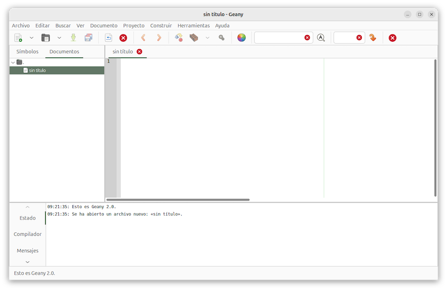
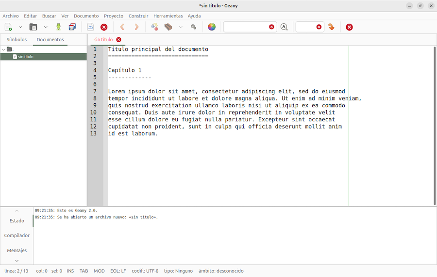

Espacio de trabajo¶
En este cuaderno examinaremos el funcionamiento de Geany ejecutándose en un sistema operativo Linux, aunque los contenidos son igualmente válidos para otros sistemas.
Inicio¶
Dependiendo del sistema operativo, Geany se inicia pulsando con el ratón en el escritorio, bien en el menú de aplicaciones, o sobre el icono de Geany:
o bien desde el terminal de comandos, tecleando el comando:
$ geany
Espacio de trabajo¶
Una vez iniciado, la ventana de Geany muestra algo así como:

El aspecto de los iconos, colores, etc. depende de la configuración del sistema operativo. El espacio de trabajo está formado por siete partes:
- La barra de título de la ventana muestra la palabra Geany precedida por el nombre del archivo que estamos editando, en estre ejemplo, "sin título", por ser un documento nuevo.
- Debajo tenemos la barra con opciones de menú. Las opciones se despliegan de la forma habitual, pulsando con el ratón. Dependiendo del sistema operativo, podemos usar la tecla F10 para mostrar el primer menú, seguidamente Right y Left para pasar a los menús adyacentes, Down y Up para seleccionar una opción, y Enter para ejecutar el comando asociado.
- Debajo de la barra de menú tenemos una barra de iconos llamada barra de herramientas (toolbar) que se utiliza como atajo para las operaciones más frecuentes. Se puede ocultar o volver a mostrar pulsando en el menú Ver > Mostrar barra de herramientas
- En el borde inferior de la ventana, la barra de estado muestra información sobre el documento que estamos editando. Se puede ocultar con el menú Editar > Preferencias > Interfaz > Varios > Mostrar barra de estado.
El resto del espacio se divide en tres paneles de trabajo:
- El panel principal de edición de documentos, en el centro, a la derecha.
- Los paneles lateral e inferior contienen herramientas de utilidad, listas de archivos para seleccionar uno u otro, visualización de mensajes, etc. Esos paneles se pueden redimensionar arrastrando la línea divisoria entre ellos. Podemos ocultarlos o volverlos a mostrar pulsando en el menú Ver > Mostrar barra lateral o en Ver > Mostrar ventana de mensajes.
Podemos llevar el panel lateral al lado derecho de la ventana mediante el menú Editar > Preferencias > Interfaz > Barra lateral > Posición derecha.
La opción de menú Ver > Mostrar/Ocultar componentes adicionales permite ocultar o mostrar en una sola operación:
- el panel inferior de mensajes
- la barra de iconos (barra de herramientas)
- la barra de estado
Panel de edición¶
El panel principal de edición sirve, como era de esperar, para editar el texto de los ficheros:

Podemos tener abiertos varios archivos a a vez, seleccionables mediante pestañas. Cada pestaña muestra el nombre del archivo y un icono [x] para cerrarlo. Los documentos con cambios pendientes de guardar muestran el texto de la pestaña en rojo (o en el color que establezcamos si cambiamos la configuración).
Las pestañas se van colocando de izquierda a derecha a medida que abrimos o creamos nuevos archivos. Se pueden arrastrar con el ratón para cambiarlas de orden.
Para crear un archivo de texto nuevo, pulsar en el menú Archivo > Nuevo. El nombre del documento será untitled hasta que lo guardemos y le asignemos su nombre definitivo.
Para guardar el texto de un archivo, pulsar en el menú Archivo > Guardar. Si es la primera vez que lo guardamos, se mostrará una ventana de diálogo para seleccionar una carpeta y nombre de fichero.
Para abrir un archivo existente, pulsar en el menú Archivo > Abrir. Se mostrará una ventana de diálogo para buscar el fichero por la estructura de carpetas.
Panel lateral¶
El panel lateral muestra inicialmente dos pestañas:
-
Documentos. Es una lista de los documentos abiertos para su edición. Sirve para seleccionarlos en lugar de pulsar sobre las pestañas.
-
Símbolos. Muestra una lista de los elementos que hay en el texto del documento actual, y permite desplazarse entre ellos. Por ejemplo, si estamos editando un programa, podremos ver la lista de funciones, variables, etc. Depende del lenguaje de programación utilizado.
El panel lateral puede contar con más pestañas si instalamos y activamos complementos de Geany.
Panel inferior¶
El panel inferior muestra inicialmente cinco pestañas:
- Estado - Muestra mensajes de actividad. Aquí es donde podemos examinar todo lo que Geany está haciendo.
- Mensajes - Muestra los resultados de operaciones llevadas a cabo, tales como búsqueda y sustitución de texto.
- Borrador - Este es un espacio para escribir notas varias. Cada vez que cerremos la sesión de Geany y volvamos a abrirla, el texto se mantendrá intacto.
- Terminal - Aquí tenemos una emulación del terminal de comandos del sistema operativo (VTE, Virtual terminal emulator). Podemos usarla como alternativa a abrir el Terminal en una ventana aparte. En el momento de escribir este cuaderno, no está disponible en la versión Windows.
- Mensajes de compilación. Muestra los mensajes que se generan si escribimos programas y los compilamos usando las opciones del menú Construir.
Este panel inferior puede contar con más pestañas si instalamos y activamos complementos de Geany.
Podemos configurar Geany para que, cada vez que haya un nuevo mensaje en la pestaña de mensajes, esta se seleccione automáticamente. Para ello usar el menú Editar > Preferencias > General > Varios > Cambiar a la ventana de mensajes cuando haya uno nuevo. De todas formas, esto no visualiza el panel inferior si lo tenemos oculto (aunque se selecciona la pestaña de todas formas).
Complementos¶
Las capacidades de Geany pueden ampliarse mediante la instalación de complementos, bien los creados por el propio equipo de Geany, o bien los desarrollados por terceros. Tenemos una lista de complementos en https://plugins.geany.org. Algunos vienen instalados de serie.
Para que un complemento tenga efecto, se requieren tres pasos:
- descargarlo e instalarlo, siguiendo instrucciones en la documentación.
- activarlo con el menú Herramientas > Administrador de complementos
- activar determinadas funciones del complemento con Editar > Preferencias de complementos
Como ejemplo, un complemento interesante es el navegador de archivos. Añade una nueva pestaña "Archivos" al panel lateral, que permite desplazarse por la estructura completa de carpetas del disco (la pestaña documentos solo muestra una lista de los archivos abiertos).
Minimapa¶
El complemento Overview proporciona un panel lateral a la derecha del editor con una vista general del documento. Tenemos la documentación en https://github.com/codebrainz/overview-plugin/
Una vez activado, se puede configurar pulsando en el menú Editar > Preferencias de complementos. Podemos ocultarlo o mostrarlo pulsando en Ver > ShowOverview.
Dividir ventana¶
El complemento Dividir ventana permite obtener dos vistas simultáneas de documentos, dividiendo el panel de edición horizontal o verticalmente. Una vez activado el complemento, la división se hace pulsando en el menú Herramientas > Dividir ventana:

En el primer panel tenemos los documentos abiertos, seleccionables mediante pestañas. En el segundo, tenemos una lista desplegable que permite seleccionar uno de los archivos del primer panel. Podemos comparar el texto de dos archivos, o incluso ver el mismo archivo en ambas ventanas, contrastando dos fragmentos diferentes. Este segundo panel se cierra mediante un icono [x] en su cabecera.